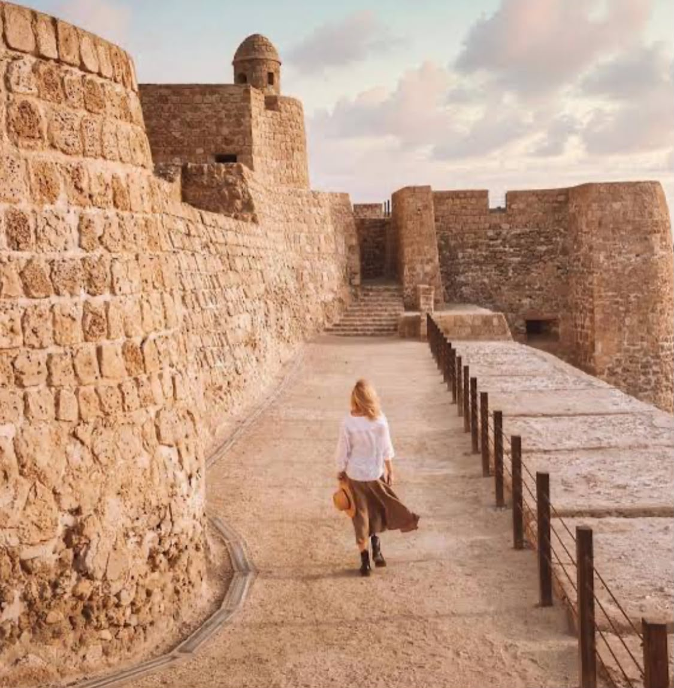
Bahrain Fort (Qal'at al-Bahrain)
A UNESCO World Heritage Site and one of the oldest forts in the Gulf. Layers of civilisation dating back 4,000 years.
Go at golden hour — the light over the sea is unreal.

Arad Fort
A beautifully restored Portuguese-era fort in Muharraq. Small but atmospheric, especially at dusk with the water behind it.
Combine with a walk along the Muharraq corniche.
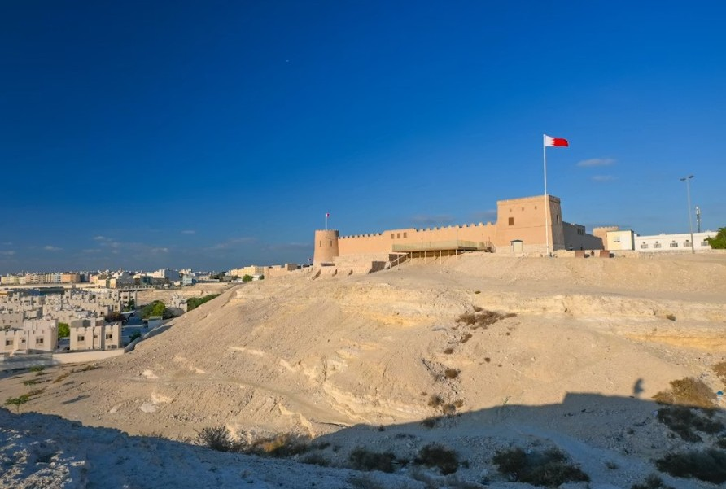
Riffa Fort
Perched on a cliff overlooking Hunanaiya Valley, this fort was once home to Bahraini rulers. Stunning views and rich history.
Less crowded than Bahrain Fort — a hidden gem.

Qalaat Bu Maher
A lesser known coastal fort in Muharraq — partially submerged at high tide, giving it an almost mythical appearance.
Boat trips to be arranged by Bahrain National Museum.

Bahrain National Museum
The museum houses artefacts from Dilmun civilisation and brings Bahrain's ancient story to life beautifully.
Spend at least 2 hours here — there's more than you'd expect.
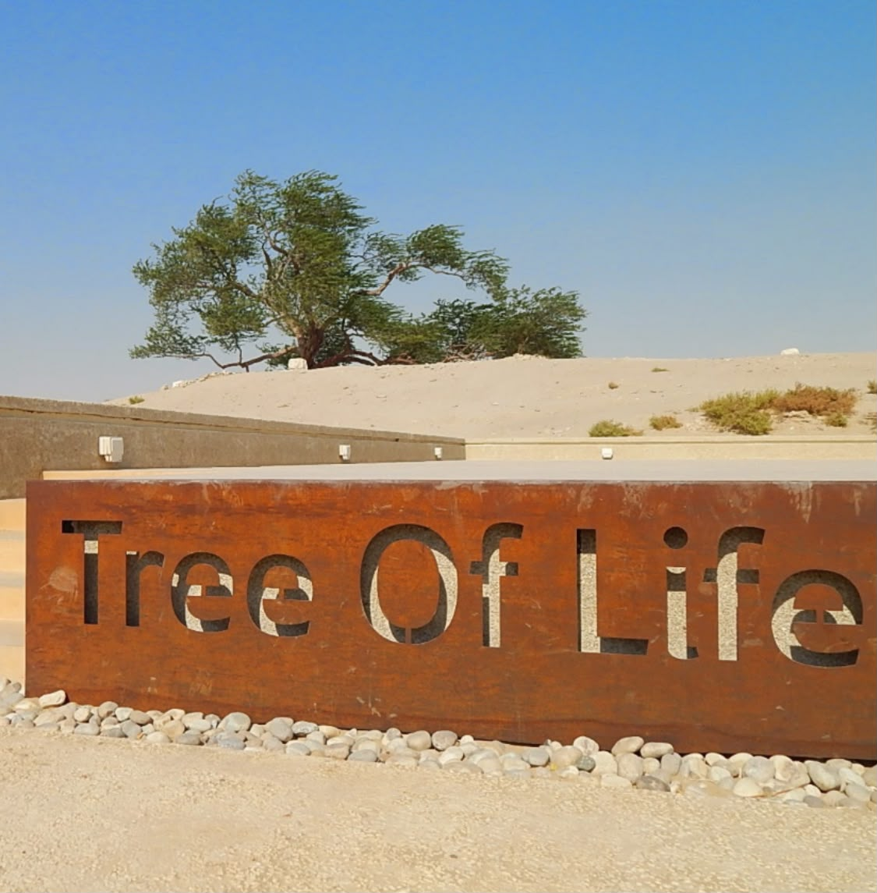
Tree of Life
A 400-year-old mesquite tree standing alone in the middle of the desert — no water source, no explanation. One of Bahrain's most mystical spots.
Best visited at sunset or under a full moon.
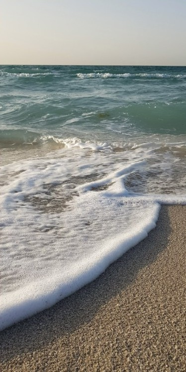
Al Bilaj Beach
One of Bahrain's most serene and unspoilt beaches — far from the crowds, with calm clear water and raw natural beauty.
Perfect for a quiet sunrise or sunset — bring your own refreshments.
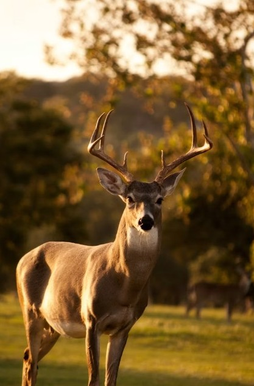
Al Areen Wildlife Park
Bahrain's only wildlife sanctuary — home to Arabian oryx, gazelles, ostriches and more roaming freely across a protected desert reserve.
Go in the morning when animals are most active.

Pottery Village — A'ali
The oldest continuously working pottery village in the Gulf. Watch local craftsmen shape clay the same way their ancestors did centuries ago.
You can try making your own piece at some workshops.

Alnaseej Textile Factory
One of Bahrain's most treasured cultural landmarks — a traditional textile factory in Muharraq where craftsmen weave fabric on ancient wooden looms.
Go on a weekday morning to see the weavers actively working.
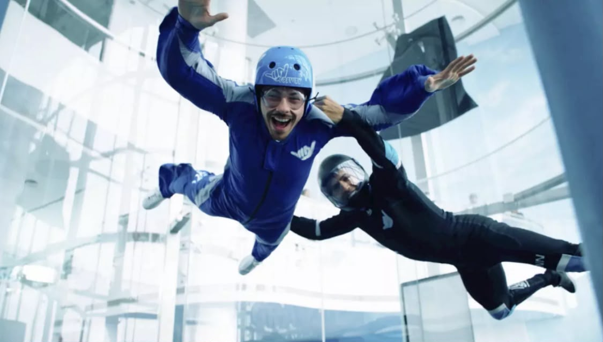
Gravity Indoor Skydiving
Bahrain's wind tunnel experience — the closest thing to freefall without jumping out of a plane. Great for all ages.
Book in advance — slots fill up fast on weekends.
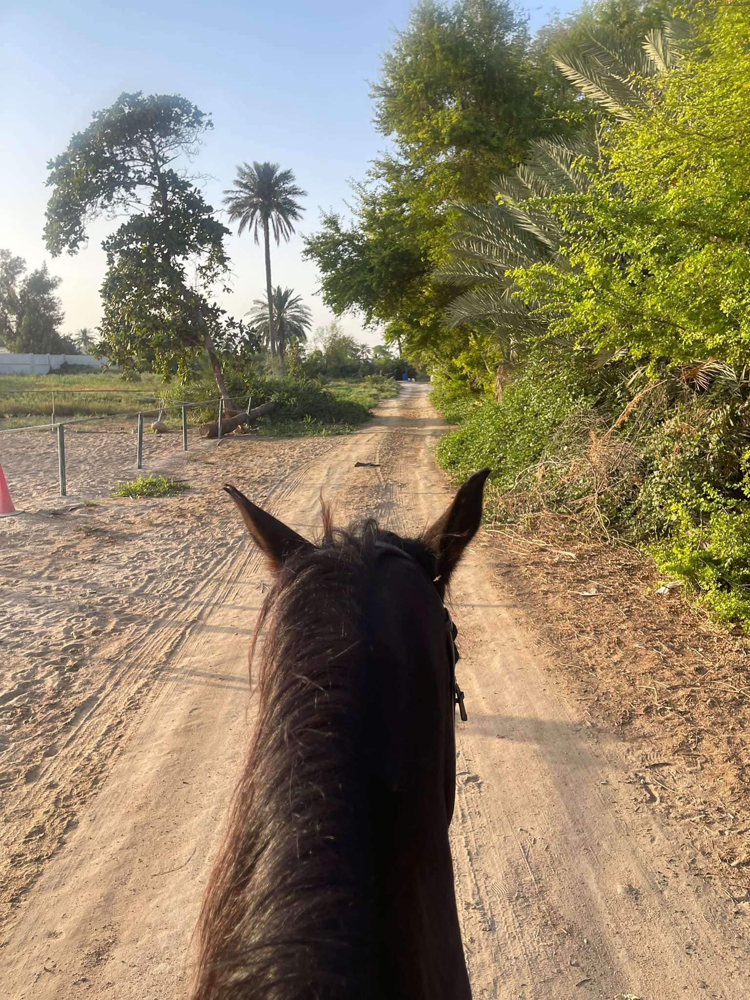
Horse Riding
Ride through Bahrain's desert landscape — guided rides at sunrise or sunset across open terrain.
Early morning rides are cooler and the desert light is beautiful.
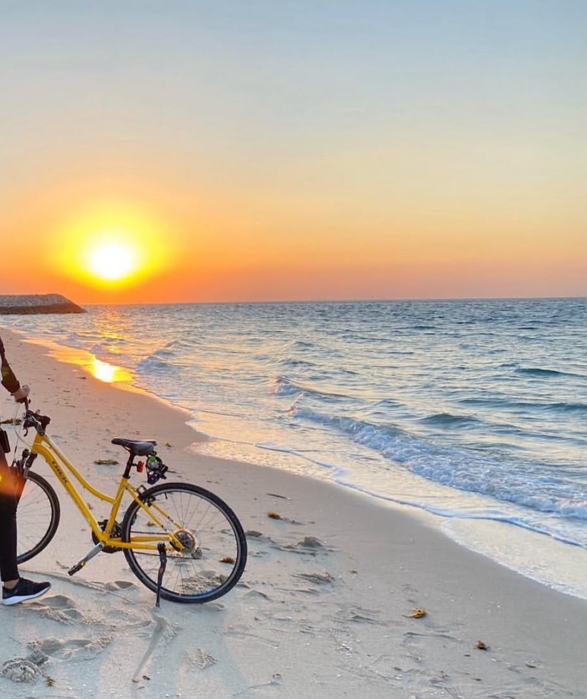
Cycling
Bahrain has a growing cycling scene with dedicated tracks and open coastal roads.
Sheikh Nasser Loop in Zallaq is the most scenic route — flat, coastal and stunning at golden hour.
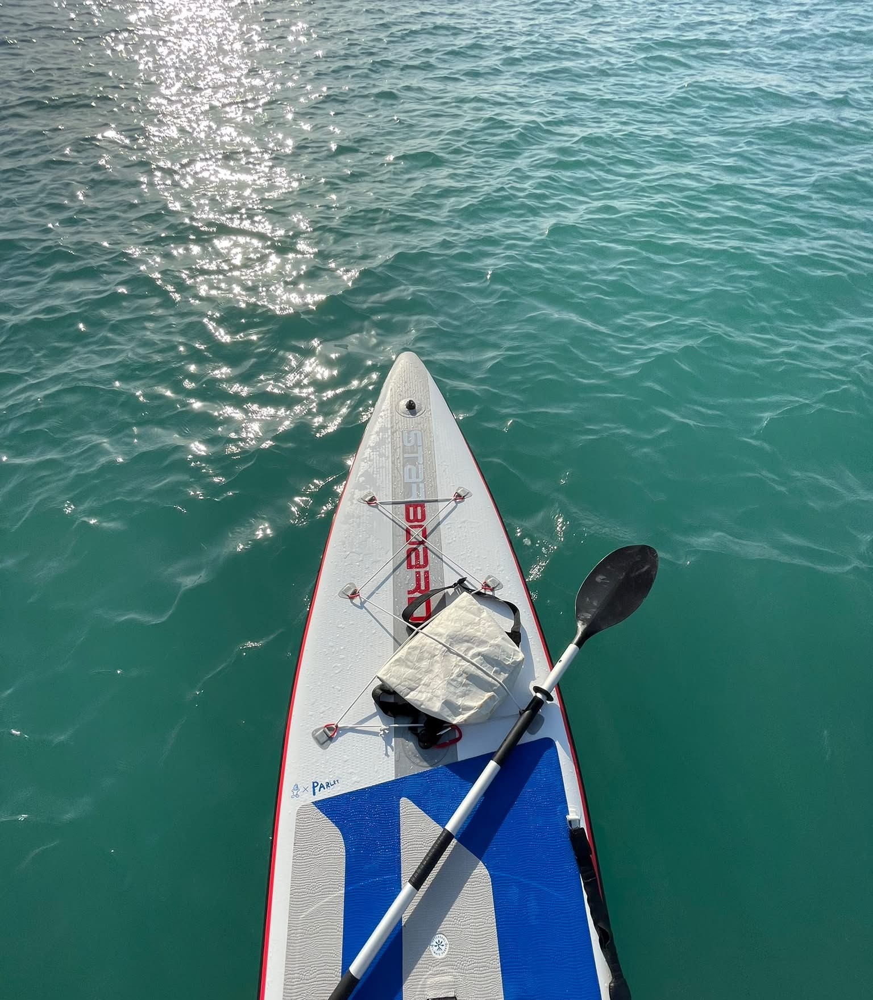
Kayaking & SUP
Paddle through Bahrain's calm coastal waters and mangroves, or try stand up paddleboarding on the flat, calm sea.
The mangroves in Tubli Bay are stunning to kayak through. Sunset SUP sessions are a must.
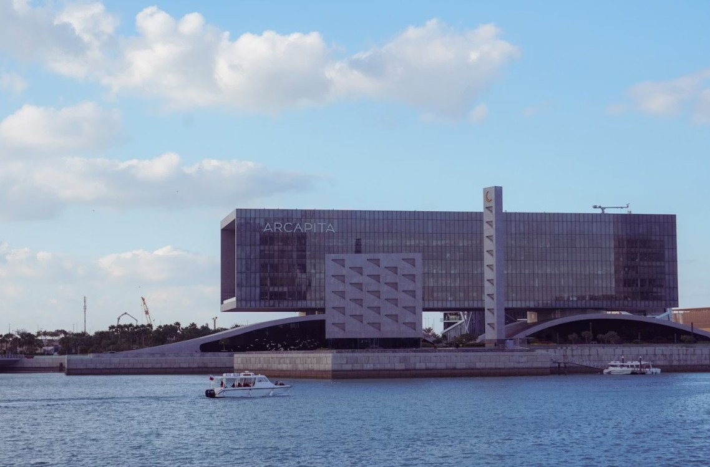
Boat Rides
Explore Bahrain's coastline and nearby islands by boat — a completely different perspective of the island.
Sunset boat tours are especially magical.

Go Karting & F1 Circuit
Bahrain has world class karting facilities near the iconic F1 circuit. Great for a competitive day out with friends or family.
Bahrain International Circuit also offers karting experiences on race weekends.
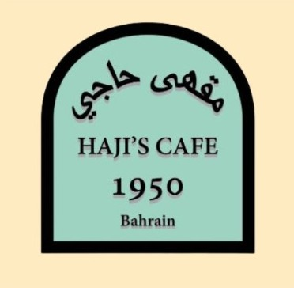
Haji
A beloved Bahraini breakfast corner — Best found in old Manama's traditional restaurants early in the morning.
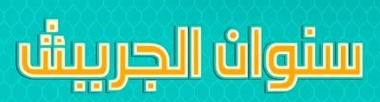
Jareesh
A deeply comforting place with multiple dishes that has been eaten in the Gulf for centuries.
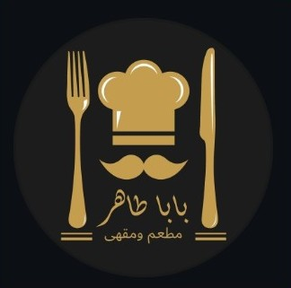
Baba Taher
A classic Bahraini restraunt — local, humble setting & old local people. Found at strategic street ins Manama.
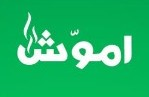
Emmawash
A traditional Bahraini place for delicious breakfast. A true taste of the island's coastal heritage.
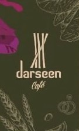
Darseen Cafe
A beloved Bahraini breakfast spot inside the National Museum — known for its cinnamon-infused drinks and traditional morning bites.
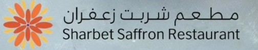
Sharbet Saffron Cafe
A traditional Bahraini breakfast cafe famous for its saffron drinks and classic morning dishes. A true local experience
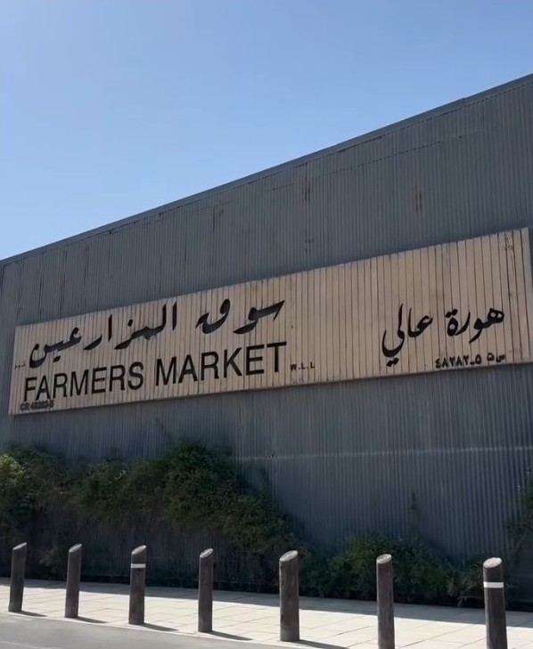
Farmers Market — Hoorat Aali
A vibrant weekly market in the village of Aali featuring fresh local produce, homemade goods, and artisan crafts. A wonderful slice of everyday Bahraini life.
Go early on market day — the best stalls sell out fast.